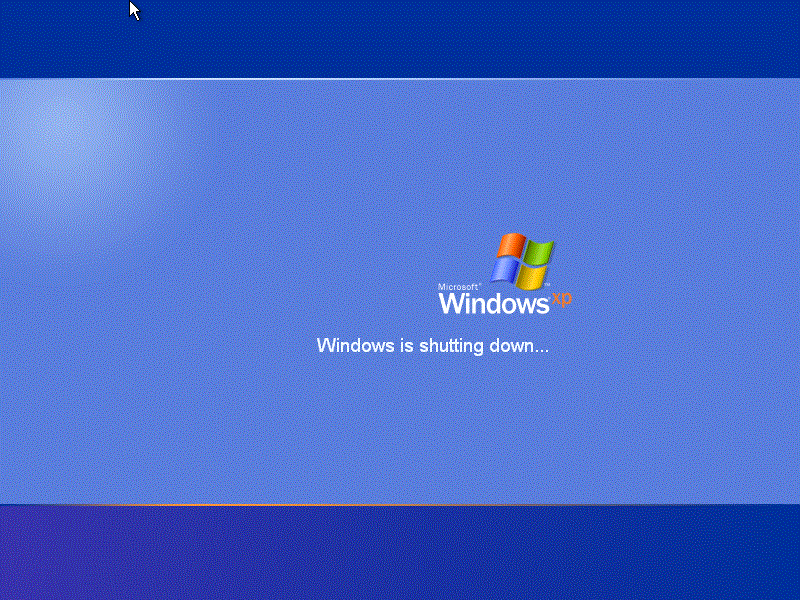
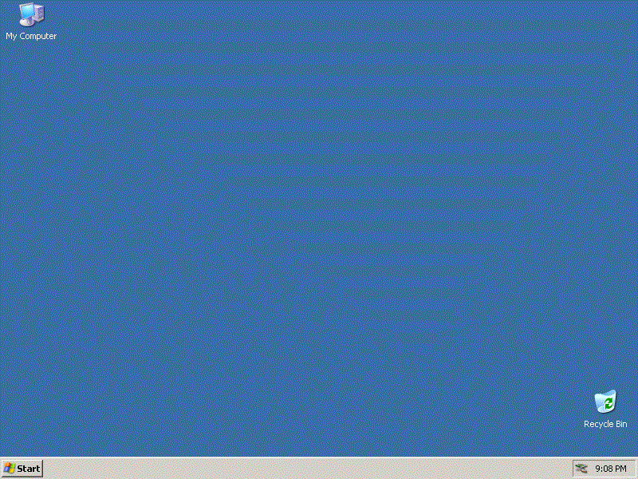

| Go back |
|---|
Interesting things While it may look like that this is Windows XP, this is not actually Windows XP! This is actually Windows Server 2003 with Welcome Screen enabled. Turns out all you have to do to get it is to use TweakNT to change SKU to one of Workstation SKUs, then in Registry Editor - Go to [HKEY_LOCAL_MACHINE\SOFTWARAE\Mirosoft\Windows NT\CurrentVersion\Winlogon], add DWORD value with a name of LogonType, set it 1. To check if you enabled it correctly, try pressing log off or shutdown buttons, if it's changed, then you did everything correctly. Downside to this is, due to the fact you changed your SKU to XP and the fact that 32 bit Windows XP SKU with a build number 3790 never existed, updates will not work. Before doing all this, I recommend to update your system if you ever want to update and have XP's Welcome Screen. A normal Windows XP setup with Classic Theme you may say? Well believe it or not, this is actually an install running on a emulated machine inside 86box which has a Pentium at 75 MHz as it's CPU and S3 Trio64 as it's GPU, and it's running quite nicely too! How did I do it? NLite, of course. Meanwhile, yes I did get it working quickly, the main issue is that with all that debloat, a lot of stuff is removed too. It's really obvious once you look at this custom XP's ISO's and original XP's ISO's file size, 70 MB to around 700 MB comparison. |
|---|
{kind=link}
{kind=link}